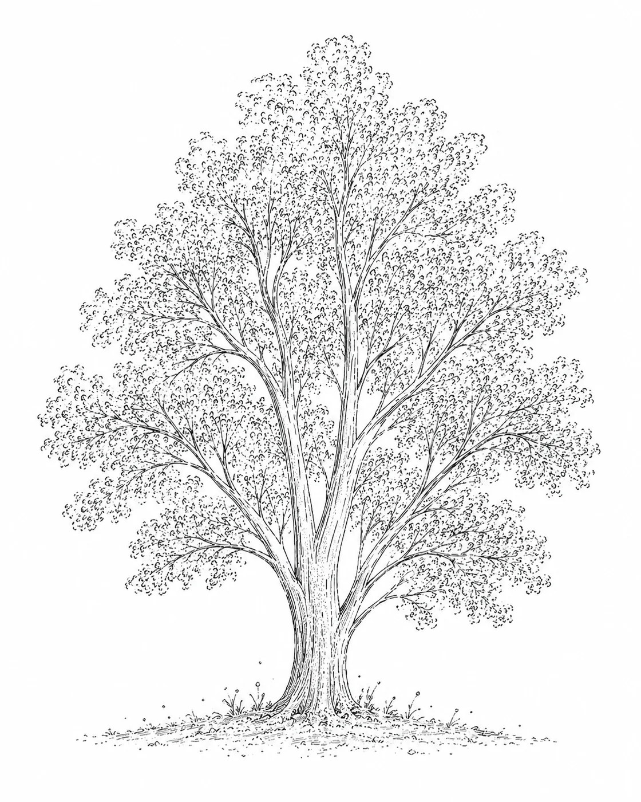
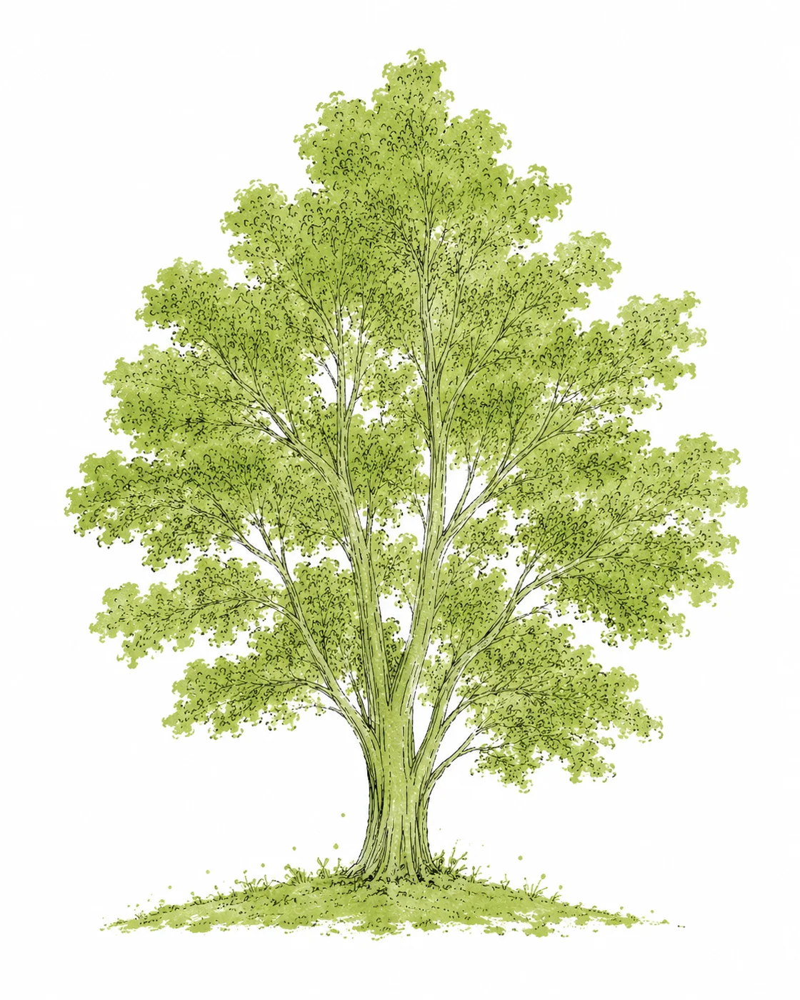

LoneTree services
Services
Building content systems for brands that need speed, control and taste. 以策略为根，用 AI、CGI 与创意指导生产可持续扩展的品牌内容。


树干 TRUNK
Hybrid Production
Trunk 是 LoneTree 的混合式影像制作系统。
我们结合 AI 生成、3D 空间控制、数字模特、产品参考与后期修正，让创意从概念生长为可交付的视觉资产。
What we provide
- AI 数字拍摄
- 数字模特定制
- 产品场景图
- 服装 Lookbook / Campaign 图
- AI + 3D 场景辅助
- 图像后期精修
- 画面一致性控制
- 产品比例 / 材质 / 光线校正
TRUNK
Hybrid Production
Trunk is LoneTree's hybrid production system.
We combine AI generation, 3D spatial control, digital models, product references and post-production to turn creative concepts into deliverable visual assets.
What we provide
- AI digital shooting
- Digital model creation
- Product scene imagery
- Fashion Lookbook / Campaign visuals
- AI + 3D scene support
- Post-production retouching
- Visual consistency control
- Product proportion / material / lighting refinement
树枝 BRANCHES
Campaign & Content
Branches 是品牌向外生长的内容触点。
我们将核心视觉方向延展为 Campaign、社媒内容、电商视觉、短片与线下物料，让品牌在不同场景中保持统一表达。
What we provide
- Campaign 主视觉
- 小红书 / Instagram 社媒图
- 电商详情页视觉
- 品牌海报
- 活动主视觉
- 快闪 / 市集 / 展览视觉
- PR 礼盒视觉
- 节日 Campaign
- 10-15 秒 AI 视觉短片
BRANCHES
Campaign & Content
Branches are the touchpoints where the brand grows outward.
We extend the core visual direction into campaigns, social content, e-commerce visuals, short films and offline materials, keeping the brand consistent across different scenes.
What we provide
- Campaign key visuals
- Xiaohongshu / Instagram social images
- E-commerce detail page visuals
- Brand posters
- Event key visuals
- Pop-up / market / exhibition visuals
- PR gift box visuals
- Seasonal campaigns
- 10-15s AI visual films
叶子 LEAVES
Visual Assets
Leaves 是最终交付的视觉资产。
每一张图、每一支短片、每一个数字角色，都是品牌视觉系统中可以继续使用、继续延展的内容。
What we provide
- 单张主视觉图
- 一组 Look 图
- 产品白底图 / 场景图
- 数字模特三视图 / 全身图
- 社媒封面图
- 海报图
- 短视频分镜图
- 动态视觉短片
- 品牌视觉资产包
LEAVES
Visual Assets
Leaves are the final visual assets we deliver.
Each image, film and digital character becomes part of a brand's visual system, ready to be reused, extended and adapted.
What we provide
- Single key visual
- Look series
- Product cut-out / scene images
- Digital model turnarounds / full-body images
- Social cover images
- Poster visuals
- Short video storyboards
- Motion visual films
- Brand visual asset package